We have analysed current and potential issues and identified their impact on the business and stakeholders. The table below maps out the identified material issues against our internal and external drivers.
| Assessment criteria | Material issue | Reasons for materiality | Material stakeholder group | |
| Relevance to the organisation |
|
Sustainable infrastructure | Building national ICT infrastructure and creating a sound business framework to support the future plans of the Company and the country | Shareholders, employees and regulatory authorities |
| Reaching diverse markets | Introducing timely, relevant technologically advanced ICT solutions that enhance connectivity and empower businesses, e.g.: managed services, cloud computing and modern IPTV entertainment platform | Shareholders and customers | ||
| Product responsibility | Promoting best practices across the value chain through high-end enterprise, SME and wholesale solutions and domestic triple-play services together with attractive product enhancements | Shareholders, employees, suppliers and customers | ||
| Developing a multi-disciplinary, knowledge-based talent pool | Nurturing manpower resources to drive long-term sustainable progress for SLT | Employees, shareholders, and customers | ||
| Significance to society and other stakeholders |
|
Broadening community access | Empowering communities by introducing most suitable technologies to ensure cost and maintenance efficiency | All rural and provincial communities across the country |
| Product responsibility | Contribute to national economic development through greater broadband availability and affordability together with significant product enhancements that cater to multiple customer segments | Customers | ||
| Environmental management and resource efficiency | Following through on the national pledge to reduce the impact of the Group’s carbon footprint by employing efficient utilisation and effective waste management practices that have a minimal impact on the environment | Society as a whole | ||
| ‘Think Green’ Technology | Applying environmentally friendly practices and promoting ‘Green’ based technologies while promoting an online working environment and digital lifestyle to minimise user-generated carbon emissions | National economy and society as a whole | ||
| Community empowerment and capacity building | Commitment to deliver meaningful change to society in line with national development priorities. Promote CSR activities that contribute to education, national ICT development and support infrastructure capacity building for industry peers in order to minimise investment duplications by peer operators | National economy and society as a whole | ||
Given the nature and scope of its business, SLT’s operations impact the lives of all Sri Lankans in some degree or form. Despite the vast number of stakeholders thus generated, SLT remains committed to fulfil their expectations.
Different stakeholder groups have different interests, which sometimes conflict with one another. Stakeholder identification process and prioritisation is therefore essential to meet both short-term needs and long-term expectations. A systematic approach to stakeholder mapping thus forms the basis of all our interactions. The mapping process is followed by an analysis of strategies best suited in order to build relations, allocate responsibilities internally and optimise our engagement strategies.
| Material issues pertaining to the stakeholder |
Engagement | Process frequency of engagement | Division responsible | Key initiatives for the year |
| Customers | ||||
Improve customer relationship and retention |
|
|
Marketing Regional SLT VisionCom (Private) Limited SLT Publications (Private) Limited |
Quarterly Brand Health Track Study Regional Account Management Customer gathering |
Improve SME customer relationship and retention |
|
|
Marketing Regional SLT Publications (Private) Limited |
SME forums field sales campaign |
Improve enterprise customer relationship and retention |
|
|
Enterprise and Wholesale |
Enterprise forums |
| Dealers | ||||
Strengthening brand presence and improving sales |
|
|
Marketing Regional |
Dealer convention |
| Business partners | ||||
Better return, innovation and industry growth |
|
|
Enterprise and Wholesale SLT VisionCom (Private) Limited Network Regional |
|
| Employees | ||||
Employee welfare, satisfaction and retention |
|
|
Human Resources Corporate |
‘Change’ programme and internal communication campaigns |
| Shareholders | ||||
Dividend, innovation and industry growth |
|
|
Company Secretary Corporate |
AGM and rating reviews to rating agencies |
| Suppliers | ||||
Better return, innovation and industry growth |
|
|
Administration Chief Executive |
Publications awareness on new business strategy and culture |
| Government | ||||
Investment & infrastructure development, better return, innovation and industry growth |
|
|
Corporate SLT Publications (Private) Limited |
Monthly meeting with the regulator Forums |
| Media and pressure groups | ||||
Quality affordable service with good after sales service, investment and infrastructure development, innovation and industry growth |
|
|
Corporate Marketing |
Website revamp and social media and media relations drive |
| Community | ||||
Community investment and infrastructure development |
|
|
Corporate Marketing |
Website revamp and social media drive |
Our business model is driven on our strategic foundations built on delivering world class ICT services, transforming and modernising operational architecture, transforming to a next generation network and strengthening Group synergy.
It supports our goal to deliver value to our shareholders, customers and the society.
The communications market is very competitive in Sri Lanka. Customers have choices as and when they need.
We are very confident that we have a unique combination of people, brand, networks and technology.
To realise our goal, overall investment the Group has made throughout its entire 150-year span is enormous in terms of magnitude. The SLT Group has invested over USD 1.3 billion in telecommunication service provisioning since coming under the BOI umbrella in 2007. Investments made by SLT towards the country for a period of over 150 years have placed Sri Lanka as well as our country’s entire ICT sector at the forefront of the region by facilitating multi-faceted ICT solutions to the nation, and helping to increase its strategic geographical advantage. We are indeed humbled by the confidence placed in us by the Government of Sri Lanka and the Board of Investment of Sri Lanka. In that sense ‘Investing for the future’ is always at the heart of the way SLT Group runs the business.
Since obtaining BOI approval in 2007, SLT has invested in excess of Rs. 57 billion/USD 485 million to improve the country’s telecommunication infrastructure, encompassing the expansion of multi-faceted national ICT infrastructures: Internet Data Centre (IDCs), Voice Services, Enterprise and Wholesale Services, High Speed Broadband Services, PEO TV expansion, Fibre Optic Network expansion, 4G LTE expansion, International Connectivity, Fibre to the Home (FTTH) and Wi-Fi Wireless Broadband projects.
As a business undertaking with a significant State shareholding, SLT shares in and contributes to national economic and social goals as outlined by Government in policy. In 2013, these were:
Revenue at Group level reached Rs. 65.04 billion, a 8% growth, primarily driven by mobile voice, broadband, wholesale and enterprise data. At Company level, SLT experienced a noteworthy increase in revenue mainly driven by broadband, wholesale and enterprise data, and international revenue. SLT revenue has increased to Rs. 38.95 billion in 2014 from Rs. 36.78 billion in 2013, recording a growth of 6%. Subscriber numbers experienced an upward curve of 6% in both wire-line and CDMA. Even though there was a decline in the voice revenue as expected, non-traditional revenue lines including broadband, wholesale, enterprise data and PEO TV recorded significant growth levels.
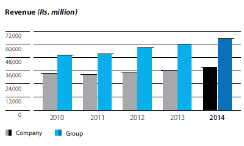The operating cost was up by 12% for the Group mainly due to the out of court settlement of Rs. 673 million and a Rs. 518 million obsolescence of network equipment. Overall, the cost was prudently managed by the management.
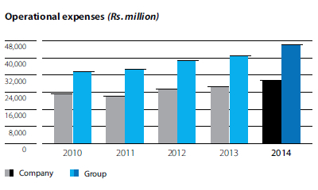 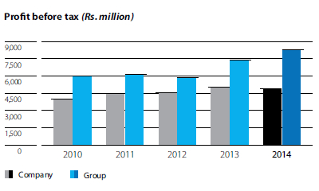 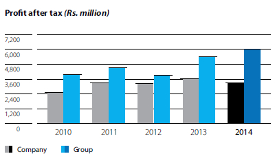The Group recorded a Profit before Tax (PBT) of Rs. 8.25 billion in 2014 compared to Rs. 7.36 billion in 2013. This was an increase of 12%. The Profit after Tax for the year was Rs. 6.00 billion in 2014 compared to Rs. 5.42 billion in 2013, an increase of 11%. Enhanced turnover, prudent management of operational costs and favourable impacts from non-operational activities resulted in significant increase in profit for the year under review.
At Company level, SLT posted a PBT of Rs. 4.86 billion, a marginal decrease of 3% from the previous year and a Profit after Tax for the year of Rs. 3.3 billion, a decrease of 9% when compared to 2013. The main reason for this drop was due to the out of court settlement of Rs. 673 million paid out during the year.
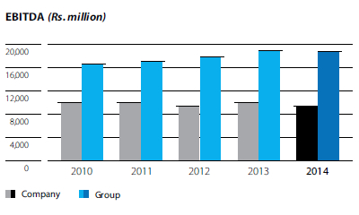Group interest cover saw a favourable trend due to the increase in profitability. Interest cover increased significantly to 9.73 in 2014 from 9.58 in 2013 at the Group level, while at Company level there was a marginal decrease to 10.17 from 14.51 last year.
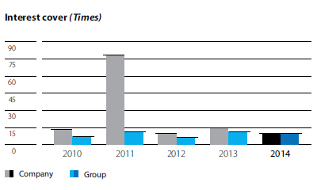At Group level, gearing as at 31 December 2014 and 2013 was 0.30 and 0.26 respectively, while at Company level, it increased to 0.22 in 2014 compared to 0.09 in 2013.
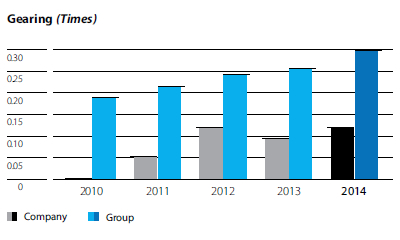Total non-current assets of the Group increased to Rs. 97.26 billion, as against Rs. 87.45 billion from the previous year. The Company‘s total non-current assets were Rs. 78.5 billion compared to Rs. 66.05 billion during 2013.
For the Group ROE was 9.38% this year compared to 9.06% last year. For the Company ROE was 5.6% in 2014 and 6.4% last year.
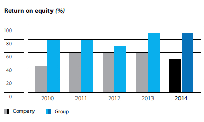
Group property, plant & equipment increased by Rs. 10.4 billion to Rs. 90.9 billion in 2014 from Rs. 80.5 billion in 2013. For the Company the figures were Rs. 60.2 billion compared to Rs. 47.5 billion last year. This is an increase of Rs. 12.7 billion.
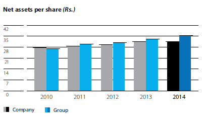 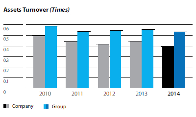Worldwide and at home, our industry is in a state of continuous transition. Companies like Sri Lanka Telecom must constantly reinvent themselves to remain competitive and relevant. The challenge is immense, yet SLT has shown itself more than equal to it. Leveraging opportunities created by the changing landscape and the national policy framework, our Group remains both the market and a technological leader in its sector.
Today, SLT provides ICT solutions to most connected Sri Lankan businesses, including Business Today top 25 companies, LMD top 100 companies, Colombo Stock Exchange listed companies and nearly all connected public-sector institutions. This pervasive presence means that our contribution to the national economy is, in reality, much higher than is indicated purely by our own revenue and tax figures. Essentially, we are in the business of helping others build business and increase their revenues.
Our recent investment in the SEA-ME-WE 5 submarine cable system, a ultra-fast, high-capacity international cable system that will connect Southeast Asia with the Middle East and Western Europe, will not only boost Sri Lanka’s international connectivity, creating a plethora of opportunities for citizens and businesses, but will also give us ‘full landing’ status, meaning that Sri Lanka’s connections with the world will now be direct, not through a branch of the cable system as was previously the case. This will increase our attractiveness as a destination for BPO and data centre operations. The SEA-ME-WE 5 cable station is now being established at Matara.
In the year under review, we also contributed to national transformation and pride by becoming the preferred ICT solutions partner for a number of Government ‘mega-projects’. We also implemented new ICT solutions for universities (we recently upgraded the LEARN university network), the Government’s own ICT network and ‘e-government’ programme, the Commonwealth Heads of Government Meeting, the Police CCTV project expansion and many others.
The biggest trend in telecommunications in 2014, as it has been for some years now, was the rapid expansion of online networks and services. According to a report published by the International Telecommunications Union (ITU), some 2.9 billion people or 40% of the global population were online by the end of 2014. If this rate of growth continues, half the world’s population will be online by 2017.
According to the same authority, mobile phone subscriptions were estimated to exceed 6.9 billion worldwide by the end of 2014 – a connection for almost every person on the planet. Three-quarters of these subscriptions were in the developing world and over half in the Asia-Pacific region. By the end of 2019, says the ITU, there may be 5.6 billion smartphone subscriptions.
These are exciting figures. They reveal opportunities for substantial growth and foretell energetic competition as telecom firms jostle for the largest possible piece of the pie. Around the world, telecom authorities and firms are boosting the roll-out and deployment of broadband networks and services to position themselves and their countries for future competitiveness in a growing digital economy. There is widespread recognition that broadband networks and services are more than simple infrastructure – they represent a set of transformative technologies that are changing the way we communicate, the ways in which we work, play and do business.
The ITU has set some global broadband goals for its members. Broadly, these are:
As a member of the ITU and a signatory to its protocols, Sri Lanka, too, is committed to these goals. More specifically, SLT is committed to the Connect 2020 Agenda for Global Telecommunication/ICT Development, which was unanimously adopted at the ITU 2014 Plenipotentiary Conference. The agenda specifies concrete goals and objectives in a number of areas ranging from cyber-security to the cost of online services to the creation of a gender-neutral internet. More information on the Connect 2020 agenda can be found at the ITU website (see http://ww.itu.int/pp14).
While new technologies are expected to drive telecoms growth, and in particular ICT and broadband growth, vast investments in legacy systems around the world cannot be written off overnight. Thus, copper-based technologies (DSL, ADSL and ADSL2+) still predominate around the world, though fibre continues to outpace all other access types in new deployments. Fibre-based technologies, which include VDSL and VDSL2, now enjoy global overall growth rates of 17.6%.
This worldwide picture of technological transformation is also reflected in Sri Lanka.
Sri Lanka’s economic performance during the past few years has followed the positive trend of emerging economies in the region thanks to a series of well-timed macroeconomic interventions to stimulate growth and reinforce stability. Growth was also fuelled by a gradual easing of national monetary policy from mid-2013 onwards. Seeking to build a firm credit appetite among private-sector investors, the Central Bank of Sri Lanka further eased interest rates in the latter part of the year. The looser regime helped foster a healthy level of credit growth among private-sector companies.
About 2.9 billion* people or 40% of the global population were online by the end of 2014.
Mobile phone subscriptions were estimated to exceed 6.9 billion* worldwide by the end of 2014.
Combined mobile and fixed-line telephony penetration in Sri Lanka is now 100%.
* Source: International Telecommunications Union
The Government awarded Sri Lanka Telecom the role of ‘national backbone network service provider’ for Sri Lanka in 2013. Under this license, SLT will provide the fibre-optic ‘backbone’ for the national communications network, which will cover all 329 administrative divisions of the country within five years.
Continuing with the trend of the past few years, inflation remained at single-digit levels. According to the Central Bank, average inflation over the past 65 months was 5.9%.
Combined mobile and fixed-line telephony penetration in Sri Lanka is now 100% - a magnificent achievement for a country that, barely a generation ago, was struggling to offer widespread voice connectivity beyond major urban centres and trunk roads. But we have moved far beyond voice. Today, Sri Lanka’s Network Readiness Index (NRI) is equal to India’s – the highest in the region. The country also enjoys some of the lowest call and data charges in the world, making it highly attractive to businesses that rely on connectivity to function. Unsurprisingly, Sri Lanka was named ‘outsourcing destination of the year’ in 2012-2013 by the UK National Outsourcing Association and was ranked among the top 25 global outsourcing destinations by A.T. Kearney in 2011. The IT/BPO sector has experienced tremendous growth in the past few years and is now one of the country’s top five export industries. There are now over three hundred IT, BPO and KPO companies in Sri Lanka, employing more than 60,000 people.
With economic growth likely to continue in the long term, demand for the services provided by SLT and its subsidiaries can only increase. However, meeting the demand will call for extraordinary efforts in such areas as technological innovation and adoption, increasing access to services, making services affordable, relevant and customer-friendly, and optimising revenue streams.
Not content with being Sri Lanka’s leading telecom company, SLT is aggressively pursuing new markets in the region. Building international connectivity is a key aspect of this strategy. SLT’s global coverage was significantly strengthened via undersea optical fibre links: SEA-ME-WE 3, SEA-ME-WE 4, Bharat-Lanka (between India and Sri Lanka) and Dhiraagu (between Maldives and Sri Lanka). Sri Lanka’s geographical location makes it a natural nexus for communications in the Indian Ocean basin and helps ensure that the country plays a key role in the process of unfolding new technologies across the region.
We report below on a number of international connectivity-related projects.
Commissioned in 2005, the SEA-ME-WE 4 cable system is an ultra-high-capacity fibre-optic submarine cable system linking South-East Asia to Western Europe via the Middle East. Utilising linear and ring-fibre network architecture, this 18,000 km cable is equipped with a total of 16 landing stations. The SEA-ME-WE 4 cable network is owned by a consortium of 17 leading telecom carriers from 15 countries.
SLT has developed important partnerships through its involvement in this project. Key among them are the relationships forged with near neighbours Bharti Infotel and Tata Communications (India) and Dhiraagu (Maldives).
Following a 2013 upgrade by SLT that enabled the system to accommodate speeds of up to 100Gbps, the cable again became available for commercial use at the end of 2014.
SLT is also a member of the 19-member international consortium that owns and is currently in the process of implementing yet another important connectivity project, the SEA-ME-WE 5 international undersea cable system. With a total design capacity of 24Tbps, this 20,000km cable runs from Singapore to France and has a total of 16 landing stations. Construction of the cable commenced in September 2014. When it is finished in 2016, SEA-ME-WE 5 will deliver a massive increase in communications capacity, which will be available to support growth in Sri Lanka and other member countries.
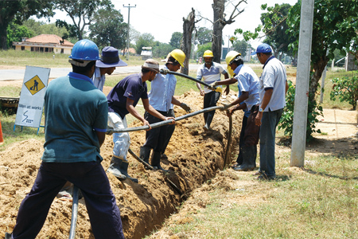
The ambitious Sri Lankan sector of the project entails building a double landing station at Matara. The landing stations for SMW4 and SMW3 are located at Colombo and Mount Lavinia respectively.
SLT is more than simply the leading telecoms service provider in Sri Lanka; it is responsible for creating and maintaining the physical telecommunications infrastructure of the nation. This function, whose historical origins lie in SLT’s former incarnation as the incumbent telecom partner has greatly broadened and diversified in the decades since privatisation. Besides its obvious competitive advantage, being the national infrastructure provider is also an awesome responsibility - one of which we are always conscious, and seek to meet the utmost standards of technical and professional excellence in fulfilling.
Our ongoing network modernisation and transformation project, which consists of the Next Generation Network (NGN) project and the i-Sri Lanka programme, is bringing ultra-high-speed broadband coverage, together with a host of IP-based services, to existing network users all over the country. Currently, SLT internet services are delivered via the nationwide fibre-optic backbone using a variety of access technologies: copper-based PSTN (Megaline), FTTC (i-Sri Lanka), FTTB (Metro Ethernet), LTE, Wi-Fi and Corporate VPN (Intelligent Solutions).
Recent achievements in this area include the roll-out of Fibre to the home (FTTH) services in urban areas, which commenced in April 2014, and the extension of ICT and broadband services to Delft Island, 32 km off the coast of Jaffna, in October 2014.
We report below on some of our national infrastructure-related projects.
The Government awarded Sri Lanka Telecom the role of ‘national backbone network service provider’ for Sri Lanka in 2013. Under this license, SLT will provide the fibre-optic ‘backbone’ for the national communications network, which will cover all 329 administrative divisions of the country within five years. The first phase of this project, completed in 2014, consisted of a new generation OTN-based 100G DWDM solution delivering 8Tb of capacity. This world-class transport and backbone network facilitates the full range of broadband access technologies, including ADSL2+, VDSL2, FTTx, carrier-grade Wi-Fi and 4G/LTE, with download speeds of up to 100Mbps, which is ultra-fast.
In parallel with our efforts to extend and improve the national communications backbone, SLT is working to transform the entire national communications network into a full-fledged ‘Next Generation’ Network (NGN) capable of handling massive amounts of data at super-fast speeds with maximal data integrity. This ongoing project commenced in 2011. The chart below shows progress to date:
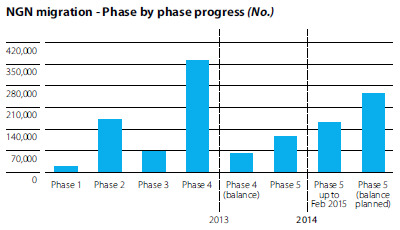
An ambitious project intended to facilitate unlimited network access at unprecedented speeds with minimal disruption, i-Sri Lanka currently leverages FTTC, FTTB and FTTH technologies to extend connectivity via multi-service access nodes located in close proximity to the desired location. In the future, however, switching between multiple mechanisms will be eliminated by a more efficient soft switching structure accommodated by a single-platform operational system.
FTTH connectivity supports download speeds of up to 100Mbps currently, increasing the reliability and quality of broadband data while significantly reducing maintenance and replacement costs. Having commenced deployment in 2010, the i-Sri Lanka project is expected to be completed by end 2015. The project has important environmental impacts, including a space saving of 8,500 sq.ft. and monthly energy savings of some Rs. 70 million till end 2013.
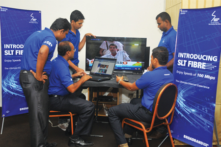
Our efforts to improve the national communications infrastructure benefit all Sri Lankans. They also, necessarily, benefit all service providers – our competitors as well as ourselves. However, SLT is ideally placed to leverage its competitive advantage as infrastructure provider by taking the lead in rolling out new services for customers based on added capacity and next-generation technologies. These aspects of our operations are discussed below.
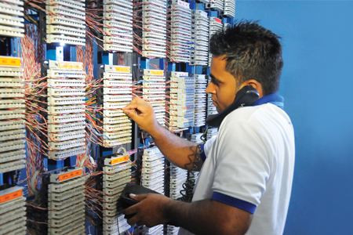
While FTTC and FTTB technologies are available to all users in a neighbourhood or building, fibre to the home technology is a benefit enjoyed only by SLT fixed-line customers. In 2014, we continued to roll out VDSL2, ADSL2+ and FTTH, simultaneously enhancing customers’ experience and investing in the future. More than half a million households are already connected to SLT’s broadband services; our effort now is to provide all of them with FTTH, the world’s most reliable connectivity option.
At the beginning of the year under review, we introduced data-volume enhancements at no extra cost to customers. We also further expanded our broadband portfolio, enabling customers to choose packages offering speeds ranging from 2-16Mbps and monthly data volumes from 2.5-375GB.
We were proud to see Sri Lanka’s ranking in the Global Network Readiness Index advance by three places, while the country continues to offer the world’s lowest-priced entry-level broadband services among countries where broadband is growing quickly.
SLT Metro Ethernet delivers high-bandwidth connectivity for high-rises, large corporate offices and important commercial buildings. It is based on the well-known Metro Ethernet Forum (MEF) standard and offers capacity and reliability in the demanding arena of data communications for enterprises.
The SLT Metro Ethernet network connects most important commercial locations in metropolitan areas, including cities outside Colombo. A new aggregation network was introduced in 2014 for improved service availability.
Our enterprise customers now enjoy a wide array of product offerings in our Intelligent Solutions portfolio. Exclusively offered to corporate customers, the portfolio includes managed, networking, hosting and enterprise voice services.
We continued to expand our public Wi-Fi hotspot service using next generation wireless broadband access technology, widening the country’s broadband footprint and improving internet access for all Sri Lankans on line. The project aims to create a series of carrier grade Wi-Fi hotspots at strategic locations across the country. By facilitating seamless mobile offloading and roaming for SLT broadband customers, these Wi-Fi hotspots are expected to provide wider access for the SLT Group’s fixed and mobile broadband subscribers, thereby helping to increase our customer acquisition and retention rate in direct correlation to the growth in the number of hotspots across the country.
Following our launch of advanced VDSL2 fixed-line broadband technology in September 2013, we have continued to replace ADSL2+ technology with VDSL2 across an ever-widening swathe of our network, delivering connection speeds of up to 100Mbps to broadband subscribers.
We also introduced another broadband technology, fixed 4G LTE, with a demonstration at the Dr. N.M. Perera Memorial Hall, Ruwanwella, Kegalle in January 2014. Download speeds of up to 50Mbps were attained at the demonstration. The Company enhanced its broadband delivery capacity with the addition of a LTE platform. It allows to engage in the competition head-on with three complementary fixed broadband platforms of DSL, FTTX ad LTE.
Launched in March 2014 at an SLT customer forum for Government institutions at Water’s Edge, Battaramulla, SLT’s breakthrough cloud computing service, akaza, provides end-to-end enterprise services that offer enterprise customers, Government Departments, SMEs and micro-enterprises the advantages of enhanced agility, quick service delivery and cost efficiencies while providing (’in-house IT’ teams) maximum ROI and improved scalability.
The akaza product was developed in collaboration with Citrix Systems, a global leader in cloud services, mobile workspaces, virtualisation, mobility management and networking. It offers ICT infrastructure, data archiving and operations, development platforms, working desktops, software and communications as ‘services’, meaning that organisations no longer need to invest in infrastructure to provide these capabilities for themselves. The deployment of akaza is made possible by SLT’s state-of-the-art broadband infrastructure, which facilitates high-quality, uninterrupted, high-speed data communications – the single most important criterion for successful cloud-computing deployment. For users, akaza eliminates the need to invest in expensive servers, data centres, software and IT experts, freeing them to focus their capital and energies on what they do best. It is particularly useful for SMEs and micro enterprises for whom capital costs have hitherto limited access to these facilities.
SLT takes the lead in rolling out new services for customers based on added capacity and next-generation technologies.
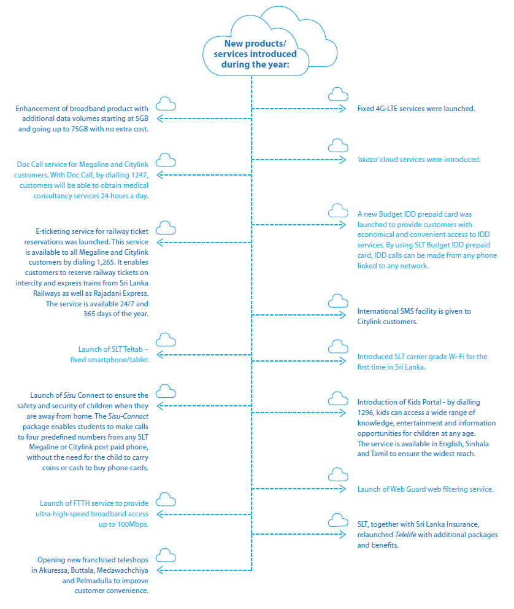
| Measure | Frequency | Source | Current levels | Trends |
| Revenue Growth | Monthly | Financial reports | On par with budgets | Growing |
| Number of new connections | Monthly | System reports | On par with budgets | Growing |
| Number of disconnections due to churn | Monthly |
System reports | On par with budgets | Positive |
| Number of disconnections due to migration between products | Monthly | System reports | Within expectations given new products introduced to the market | Migration from legacy products to new products observed |
| Measure | Frequency | Source | Current levels | Trends |
| Level of customer engagement through sales calls and visits | Regular Basis | Activity reports, One-on-one discussions | Focus area for improvement | Positive |
| Ease of access to the sales team | Regular Basis | One-on-one discussions | Satisfactory | Positive |
| Customer’s level of awareness of products, solutions offered | Regular Basis | One-on-one discussions | Focus area for improvement | Positive |
| Level of confidence in the solutions proposed | Regular Basis | One-on-one discussions | High | Positive |
| Measure | Frequency | Source | Current levels | Trends |
| Number of services provisioned by product type | Monthly | System reports | Focus area for improvement | Increasing in number |
| Time to provision a new service by product type | Monthly | System reports | Within expectations most of the time | Positive |
| Time to provision changes to an existing service by product type | Monthly | System reports | Within expectations most of the time | Positive |
| Measure | Frequency | Source | Current levels | Trends |
| Number of calls received in a given month by type of fault reported | Monthly | System reports | Moderate | Associated with external and internal factors |
| Time taken to resolve customer complaint by type of fault reported | Monthly | System reports | Within expectations most of the time | Positive/Improved |
| Number of repeat calls by type of fault reported | Monthly | System reports | Low | Positive/Improved |
In addition to the above routine measures, the findings of a customer experience survey conducted among enterprise customers were used to identify key areas for improvement. Thereafter initiatives have been agreed with internal stakeholders and assigned to project teams who are currently working on addressing these gaps.
The CDMA-based ‘Smart Dial PBX’ is the most talked about SME product released by SME Product Division in 2014. This PBX connects of CDMA phones as terminals and facilitate 100% wire free PBX Service.
This product was designed in such a way that it is convenient to order by a customer and also easy to operate. Also this product has got the advantage of being cost effective due to the fact that it is a hosted PBX. This reduces the cost of owning the PBX by a customer drastically and makes more additional hardware unnecessary at customer premises.
Taking the advantage of wireless network of CDMA instruments, this hosted PBX is capable of operating in geographically dispersed locations.
During this year SLT was able to provide the CDMA PBX solution to more than 350 SMEs and maintain a selling rate of one PBX per day. Also this product paved way for SLT to understand the need to communicate about SME customers in greater detail and thereby to prepare more products for 2015.
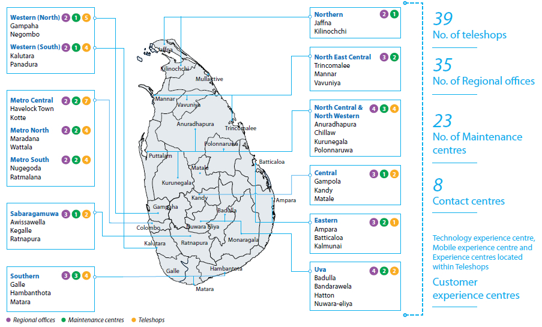
Number of teleshops, regional officers, maintenance centres and contact centres were increased during the year to improve customers convenience.
During the course of the year, SLT installed telephones at schools and tutorial academies around the country and distributed personal-identification numbers to students at these establishments under Sisu-connect, a joint project of the Ministry of Education, the Ministry of Telecommunications & Information Technology, and Sri Lanka Telecom.
Sisu-connect service helps to ensure the safety and security of children when they are away from home by providing a means for children to stay in touch with their parents when at school or attending tuition classes. The system consists of a virtual telephone platform, with special telephone units installed at selected institutions. The service is cashless for the student, who can make free calls to up to four numbers using his or her PIN. The numbers are provided by his or her parent or guardian. The service costs users (parents) Rs. 30/- a month plus call charges.
In August, we completed an upgrade of LEARN, the National Research and Education Network. The upgrade resulted in an increase of internet access bandwidth by up to 1.65Gbps and the creation of a wide-area network connecting universities and research institutes across the country. These include all universities funded by the University Grants Commission, a number of public institutes that function under other ministries, the Ministry of Higher Education and a number of national research institutions including the National Science Foundation. LEARN also has direct connectivity with SchoolNet, the network connecting Sri Lanka secondary schools island-wide, and the Lanka Government Network, which connects all Government institutions. Also we have facilitated global connectivity to Sri Lanka’s LEARN network to connect with other LEARNs of other countries, which is a giant step driving country towards a knowledge rich society.
The upgrade will facilitate online and distance education, video-conferencing and video streaming, as well as the routing of inter-university voice and broadband communications.
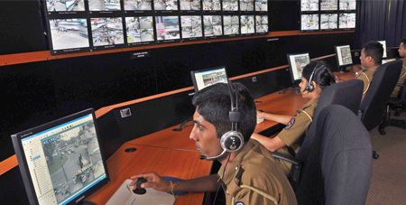
In November, SLT and its mobile-telecoms subsidiary Mobitel entered into a tripartite agreement with the Sri Lanka Police Department to provide the Department with a total fixed and mobile communications solution. The contract was won through a competitive bidding process.
SLT and Mobitel’s solution for the Police features voice communication facilities, including a state-of-the-art PABX infrastructure that provides direct inter-branch calling capabilities, a low-cost mobile solution, and a sophisticated data-communications infrastructure that links up all police stations and associated nodes.
Earlier, SLT was involved on the communications side of a Police project to introduce closed-circuit television surveillance at key locations to enhance public security in Colombo.
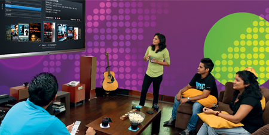
SLT’s IP based - TV service, PEO TV, had a very successful year, with the subscriber base seeing an increase of 42%. Time-Shifted TV (TSTV) or Rewind TV is the most demanded options used by most of the PEO TV users to catch up their local programmes and also some of the international channel content.
PEO TV also introduced a new commercial product, Event TV, a broadcasting solution to allow the public to use the network to telecast their own live and recorded events at an affordable price. Two new Tamil packages were introduced, whilst 170 titles were added to the On Demand Library. A new state-of-the-art IP television system was commissioned. Going beyond crystal-clear image quality to delivery of full HD, it is a multi-layered system that provides content-quality-assurance and multi-screen capabilities that will enable TV viewable from any device, mobile phone, tablet or a notebook in the near future.
Messrs NDB Bank PLC has signed an agreement with SLT for their voice communication requirements by selecting SLT as the Primary Service Provider of Telecommunication services of the bank. SLT was able to win this contract through a competitive bidding process.
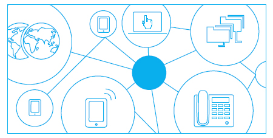
SLT has provided Voice and Broadband services to Messrs OnThree20 residencies which is a condominium project of Messrs John Keells Group PLC commencing from 1 July 2014.
A comprehensive infrastructure development solution was given to the new eleven story building of Department of Census and Statistics together with Sri Lanka Telecom (Services) Limited to implement networking solution for the department. Data network of the building was implemented with the uplink speed of 1G to 10G by laying Cat6 and fibre optic OM3 Cables. Parallel to data network, the CCTV camera system was installed with application of 53 cameras for live monitoring, and this system is equipped with a 30 days storage facility.
The centre-point of SLT customer care is the SLT Contact Centre. This is in addition to the number of teleshops, regional offices, maintenance centres and technology experience centres available island-wide. The Contact Centre is accessible via a hotline by callers dialling 1212. Nine SLT contact centres located around the country provide 24-hour customer care services to more than 25,000 customers, including Megaline, Citylink, Broadband and PEO TV subscribers, on a daily basis. Over 9,704,282 customer calls were received and successfully dealt with in the year under review.
SLT Contact Centres also deal with calls to the Government Information Centre on its 1919 hotline. This service completed its eighth year of operations in December.
The Customer Care team at SLT comprises some four hundred highly skilled and trained staff. Fully-fledged contact centre platform is capable of responding to customers requests via multi-service platform including voice, text, multi-language, technical assistance online.
The World class SLT Contact Centre which was awarded the operations of the Call Centre for the Government Information Centre (GIC) in 2011 has been commended by the Presidential Secretariat for the successful handling of over 5,000 callers per day on the ‘1919’ network. The GIC, established under the aegis of the Presidential Secretariat and the Information and Communication Technology Agency (ICTA) is the conduit which provides information to the general public pertaining to any service offered by the public sector. The number is also used as a facility to lodge complaints.
1919 - GIC that began with information pertinent to 20 Government institutions has today been able to provide information regarding about 2,000 services belonging to 300 institutions in English, Sinhala and Tamil languages. 1919 - GIC has received about 8 million calls from the public from its inception in 2006 to date. Calls 1919 – GIC received in 2013 exceeded 1.6 million. 1919 - GIC has the facilities necessary to provide services to organisations in Sri Lanka and in foreign countries.
The GIC now provides more than 65 online services through basic phone calls, such as train schedules, job opportunities abroad, flight schedules, exam results, economic indicators, medical services and contact details.
Mentioned before, many strides achieved in ICT are contributory to the above recorded manifestation of progress in ICT. Undoubtedly 1919 – GIC flagship project also has had quite a share in contributing to these achievements.
Maintained customer satisfaction on SLT contact centre over 90% during the year.
Contact centre employee satisfaction increased to 77.73% at the end of year.
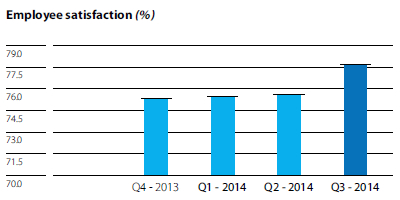
Achieved the service level KPIs of GIC (1919), one of the BPO operations handled by the SLT contact centre.
| Percentage of calls answered within 15Sec. | 95% |
| Maintained call Abandoned Rate -GIC | <5% |
An agreement was signed with SLIC for the operation of call centre on 3 March 2014, opening new business avenues for the contact centre.
Increased the new telelife insurance SLT customer base up to 114,000 and the total income expected from the above product during the year 2015 is Rs. 20 million.
Training programmes were conducted for the contact centre staff in a very effective manner to enhance knowledge to improve the customer experience.
Conducted practical sessions for broadband skilled staff in order to enhance their skills and knowledge to handle customers with confidence.
Conducted a motivational workshop on ‘Reaching beyond excellence with customers at the Centre’ for all the staff, of each level at the contact centre (447 personnel) with the assistance of a well-known resource person to enhance customer service at the contact centre.
Implemented a process to identify customer issues and concerns and to improve customer handling skills of the staff in providing solutions for each problem.
Introduced a product information portal enabling contact centre officers to service customers effectively and efficiently.
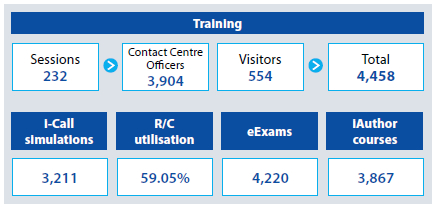
Contact centre has earned a good reputation with the successful operation of Government Information Centre and won the contract of Sri Lanka Insurance Corporation call centre BPO operation adding new revenue to SLT revenue mix.
As an ISO-certified organisation, SLT maintains a strong information-management policy. Rigorous usage and administration policies govern the uploading, editing, and deleting of information on the Group IT network, with access control over sensitive areas.
The Company knowledge base contains corporate and business information, corporate-governance guidelines, pertinent laws, statutes and regulations, network information, technical information including experience and training data, support systems, market information, employee data, etc. Access is controlled and hierarchically organised.
Knowledge management at SLT is facilitated by a web-based solution capable of supporting any number of registered users. Its open architecture has been integrated with other internal IT systems, allowing any employee to upload information, subject to a screening process and with the concurrence of the Knowledge Management Team. Uploaded information is verified by relevant subject experts.
All Company administrative information is openly accessible to employees via the Company Intranet.
SLT’s information-security policy complies with the ISO/IEC 27001:2005 standard. SLT information security policies, procedures, guidelines exist in order to
In enabling us to bring the latest products and services to the market in a timely manner, we have invested extensively in developing our IT capabilities on both fronts of software and hardware. In further recognising IT as an essential element in driving the overall business strategy, the Company also invested in business intelligence tools in managing internal ICT infrastructure and automated internal systems & processes.
In 2013, Sri Lanka Telecom received ISO 9001:2008 certification of its quality-management system (QMS) by the Sri Lanka Standards Institution. This certification, which is valid for three years with regular inspections, covers all SLT’s local and international services, its critical role as national backbone provider and wholesale connectivity provider, and the operations of its branch offices island-wide. ISO 9001 certification offers assurance of product and service quality and consistency and reflects SLT’s commitment to continuous improvement in customer satisfaction and technical competency.
SLT was awarded the ISO 27000:2005 certification on 8 April 2013 for implementation of information security in the year 2004 and continuously maintaining this certification from year 2006. The scope of this certification encompasses of SLT IT group and the major customer support departments such as ISP, IDC, IP network operations & broadband and access network operations to ensure that customer-service standards are in conformity with internationally accepted benchmarks.
Sri Lanka Telecom PLC fully understands the necessity of satisfying
our customers in sustaining the continuous growth of our Company. We believe that it is one of our primary corporate social responsibilities that demands the highest priority.
We will always strive to exceed customer expectations and promote a positive company image whilst continuously meeting the requirements of our stakeholders through the total commitment of our employees to the Company’s Quality Management System.
We will ensure continuous improvement of our quality of service by:
Since 2010 the expansion of our fibre-optic core network to the Northern Peninsula via the A9 main route was completed. This includes; improving customer access to high performance broadband, empowering business expansion, enabling all telecommunications operators to expand their operations, enhanced quality, performance and capacity to meet all future ICT requirements of the Northern Peninsula. Development spreads widely across the land, from north to east, south to west, bringing with it employment, growth, income and investment that will naturally follow in its wake.
With SLT having embarked on massive network modernisation and expansion projects, the Company’s fibre roll-out is comprehensive, with its fibre-optic transmission network now covering most parts of the island, including rural areas and the North and the East; thus enabling the Government of Sri Lanka to choose SLT as the preferred NBN partner in the light of achieving its goals for economic development, with broadband penetration being a key element in its strategy towards such development.
In Sri Lanka, as elsewhere, the impact of ICT has been enormous and transformative. We see, more and more, that customers are moving away from traditional voice communications to non-voice enabled products. In keeping with this trend, SLT is now implementing a Rs. 25 billion investment plan that will help upgrade and future-proof our infrastructure and service offering. Our business strategy calls for heavy investment in new technologies such as LTE, carrier-grade Wi-Fi, cloud computing and the national fibre backbone. Many Colombo homes and businesses now enjoy direct fibre-optic connections. Our aims are to offer more IP-based services, invest in national IT infrastructure and enhance the customer experience at every touch point, both offline and online.
SLT’s investments in carrier-grade wireless technology and fibre-optic architecture leave us well placed to capture significant synergies in the longer term. We can now provide an integrated menu of voice, networking, data-hosting, managed and cloud-computing services to our customers. By thus providing integrated solutions for large companies while simultaneously supporting the growing SME segment and the public sector through extensive broadband connectivity, we support the nation’s economic progress at all levels, seamlessly and synergistically.
We can now provide an integrated menu of voice, networking, data-hosting, managed and cloud-computing services to our customers.
Mobitel (Private) Limited, a fully-owned subsidiary of Sri Lanka Telecom, accounted for 47% of SLT Group revenue in 2014. Mobitel offers Mobile telephony, high-speed broadband, enterprise solutions, IDD and a host of value-added services with island-wide coverage. Mobitel was the first operator in South Asia to launch a super 3.5G network, the first to make a successful demonstration of HSPA+MIMO technology and the first to trial 4G/LTE technology successfully. The recent introduction of Dual Carrier HSPA+ technology and 4G-LTE service makes Mobitel’s broadband service the fastest in the country. International roaming is available with over 400 networks worldwide. With USD 500 million - worth of investments made to date, Mobitel has played an important part in shaping Sri Lanka’s ICT landscape, and presently boasts a customer base of over 5 million.
The following is a review of the activities of our largest subsidiary:
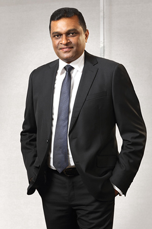
Customers are becoming increasingly tech-savvy, knowledgeable and sophisticated. Their requirements are expanding faster than technology – driving innovation in the market. In this milieu, service providers are expected to keep up with the demand through continuous improvement, innovation and enhanced service delivery.
To cater to the evolving customer needs we have embraced an all encompassing customer centric approach. We have set a benchmark for exceptional customer service standards which gives us an unparalleled edge in the market. Our ability to respond to customer demands effectively and efficiently is enabled due to the adoption of right technologies at the right time. We have built a formidable ICT infrastructure and introduced a host of new technologies and tech-based services to Sri Lankan consumers.
As part of our customer centric approach, we focused more on regional markets, particularly in the North and the East of the country where our presence earlier was not strong. Our operations in Jaffna were radically upgraded this year. In other parts of country, too, we provided services that are precisely in tune with local demand.
This year special emphasis was placed on Mobitel’s regional approach in the market. Integration of sales, marketing and network operations on a regional basis was implemented with the aim of achieving the company objectives more effectively. Additional resources were allocated to areas where Mobitel is lagging behind in market share compared to competition.
These efforts have paid off. The year under review saw Mobitel achieve its highest-ever revenues since inception. We have grown faster than the industry, acquired market share and built on success.
Internally preparations were made during the year for the implementation of a world class performance management system at Mobitel in consultation with a global leader in HR consulting. The system aims to transform Mobitel into a transparent, performance-driven enterprise where employees are rewarded solely on merit. Other structural changes are also in the pipeline.
I believe these changes will make us a more dynamic and competitive Company in a saturating voice market where broadband and wireless technologies have catapulted the communication landscape. However, generating meaningful revenues from OTT services such as Skype, Viber and WhatsApp will remain a challenge as these data services offer little value to the service provider. However, with high calibre of people with us and the changes we have now put in place, I am confident that Mobitel will continue to grow and prosper in the years to come.
Ranjith Ganganath Rubasinghe
Chief Executive Officer
During the year under review, Mobitel excelled in all key areas of the business. Mobitel reported the highest profits in its history recording a profit of Rs. 2.8 billion. This profit was achieved as a joint result of 11% growth in revenue over previous year coupled with cost efficiencies obtained through well-managed cost structure. In absolute terms, Mobitel crossed the Rs. 30 billion milestone to record a sales turnover of Rs. 30.60 billion in 2014 compared to Rs. 27.48 billion in 2013, an increase of Rs. 3.12 billion – an improvement ahead of industry.
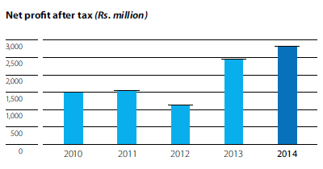
Despite voice market in Sri Lanka nearing saturation, growth in voice segment continued in 2014 as well with increase in both revenue and subscribers. Increase in international services, roaming and data services also contributed towards the growth in revenue. Mobitel’s continuous commitment and investments towards scaling and upgrading its network infrastructure have resulted in better customer experience which in turn boosts revenues for the Company. Revenue was further fuelled by Mobitel’s Strong Brand that offers its customers a wide range of products and services through the comprehensive distribution channels developed through the years. Considerable investment in latest and timely upgrades in broadband technologies such as 3G and 4G paid off during the year with a notable increase in broadband revenues compared to 2013. Data has taken a lead role as the new growth driver of the Company recording strong performance.
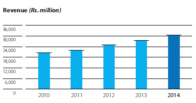
A growth trend similar to that of revenue continues across the Company’s profitability indicators with EBITDA growing by 8% recording Rs. 9.8 billion and EBIT growing by 12% recording Rs. 4.0 billion. The strong growth in EBITDA and EBIT can be attributed to prudent cost management initiatives coupled with measures to enhance productivity. For year 2014 Mobitel reported an after tax profit of Rs. 2.82 billion as against Rs. 2.44 billion in financial year 2013, recording a 15% improvement. The growth in profits was achieved despite one off write off on Mobitel network assets amounting to Rs. 601.8 million. The increase in profitability is attributable to optimum asset utilisation and increased productivity along with the prudent initiatives undertaken during preceding years having an impact on the performance of year 2014. The favourable macro environment with reduced interest rates, lower inflation and stability in exchange rate also favoured the improvement in net profit.
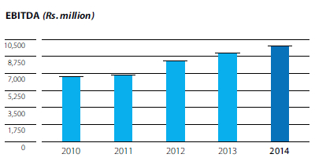

Reaching critical mass and capturing a substantial portion of core voice business has been decisive for Mobitel’s growth thus far, but voice business, although necessary, will not deliver future growth. Instead, market growth and retention will hinge on the Company’s ability to bring the latest mobile technologies to the markets it serves. To this end, Mobitel is investing aggressively in broadband technology and services, as discussed later in this review.
The Company continued to reinforce its market position in 2014, expanding reach, strengthening its position in existing markets and focusing on new niches with customised products and solutions. In an industry where competition has grown so intense that mere survival is a challenge even for leading players, Mobitel continued to gain ground and improve its sales performance. Following on from a commendable performance in 2013, the Company achieved sales turnover of Rs. 30.6 billion in the year under review – a gain of Rs. 3.1 billion or 11% over last year’s figures.
Business from voice services was still the main contributor to overall sales performance, with broadband and other services following. Despite the near-saturation of the market, Mobitel market share continued to increase in 2014 due to enhanced reach, value offerings, service innovations and effective marketing. Broadband (internet) services also reported positive growth; Mobitel will focus strongly on this area in the future.
Improved sales performance and cost efficiencies significantly increased EBITDA in 2014. Stable macroeconomic conditions such as moderate inflation and lower borrowing costs contributed significantly towards profitability. Mobitel also enjoys the advantage of strong asset-utilisation and a well-managed cost structure.
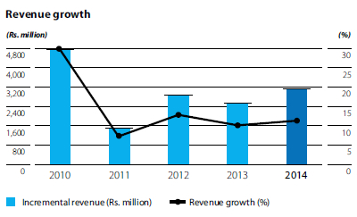
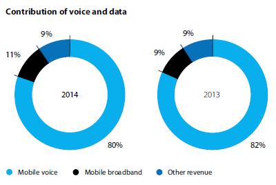
The Sri Lankan mobile communications sub-sector has developed rapidly in terms of size and technology. As regards technological sophistication, it is comparable with that of any advanced country. Investment by several competing operators has spread mobile networks across the length and breadth of Sri Lanka and mobile subscribers at present exceed 20 million in number – close to the entire population. Approximately a fifth of these are multi-SIM users. In terms of penetration, the market is approaching saturation point.
Though voice services continue to drive industry revenue, it is widely acknowledged that broadband demand will fuel future revenue growth. However, the speed and cost of technological change is a challenge for any operator, particularly in the broadband space. Market size and share become key considerations when evaluating the likely profitability of future investments. If the necessary investments in data technology are to be made, some industry consolidation is inevitable. Having the second-largest market share in the sector and currently enjoying perhaps the best EBITDA margin in the industry, Mobitel is well-placed to further strengthen its industry position and give life to its vision of making Sri Lanka a knowledge-rich infocomm society.
Building on natural growth in usage, voice services were promoted through carefully planned and executed marketing plans and promotions. The Cash Bonanza promotion campaign for subscribers had brought impressive improvements to acquisition and recharge figures when relaunched in 2013 targeting pre-paid subscribers. Its success with this segment prompted an extension of the promotion to post-paid and broadband subscribers in 2014, and 374,229 lucky winners received a total of Rs. 150 million in cash rewards during the course of the year in daily, monthly and quarterly draws. Coupled with Cash Bonanza, the company also launched a successful promotional offer in which subscribers received a bundle of value-added voice, SMS and data services worth Rs. 300/- on their first recharge. Many other customer-directed marketing and promotional campaigns, local and national, planned and ad hoc, supported Mobitel brand and services in 2014.
One step up the marketing chain, the Company launched an incentive programme for sub-dealers, whose position at the retail interface makes them especially influential with customers.
Mobitel’s share of corporate voice and data services also grew, largely as a result of intense company activity targeting this segment. The specialist unit dedicated to developing innovative applications and enterprise solutions was further strengthened; its focus was to build the reality and perception of Mobitel as an extension of the business processes of its corporate customers. The results have been encouraging in terms of new-businesses as well as in generating increased data and voice traffic from present customers. The focus on corporate services offers great promise for the future.
The Company successfully developed and launched a range of specialised product offerings and value-added services to suit various market niches. Building on insights and experience gained with the Upahara subscriber package for Government employees and pensioners, Mobitel introduced a new package for pensioners, Kalaguna, in 2014. This post-paid package, designed to address the special needs of more than half a million Government pensioners, includes a free mobile phone, a post-paid user package including free voice, and a range of value-added services including the mCash service.
Another example of Mobitel innovation is mLottery, a value-added service that allows subscribers to participate in Development Lotteries Board sweepstakes through their mobile phones using an automated, voice-guided application.
The Company’s focus on expanding market share in the North and East of the country was reflected in the relocation and upgrading of its Jaffna branch, which is now a full-fledged ‘customer experience centre’. Visitors can try out (and purchase) the latest mobile technologies on the market, including 3G, 4G LTE, and check out the newest smartphones, tabs and data services. A decentralised call centre was also set up to serve Tamil-speaking customers.
We took a platform-based approach to develop modular enterprise solutions for businesses and Government departments. These solutions deliver enhanced efficiency, cost savings and process improvements irrespective of organisation size or nature of business. The year under review saw some noteworthy successes in this area.
Mobitel extended ‘Mobitel One fuel card’ solution to Dilmah, a leading tea exporter, to improve administrative efficiency, speed and convenience. The product is a stored-value card, which replaces the manual fuel-allowance management system used by most companies. Mobitel One allows real-time monitoring of fuel transactions by the cardholder as well as his or her supervisors and other authorised personnel at Dilmah.
The Company also collaborated with Cinnamon Hotels on an automated guest check-in/check-out system for the latter’s new city hotel, Cinnamon Red. The system saves time and improves convenience.
Another Mobitel platform, mHealth, facilitates data and voice services such as mChanneling – a consultant-appointment service, successfully tested at Dompe Hospital during the year under review.
In a coming development, Mobitel has been named exclusive technology provider for the Royal College Union’s loyalty programme, Floreat. The RCU, which is probably the largest alumni organisation in Sri Lanka, will use Mobitel’s Loyalty Card platform to run the Floreat programme, which offers Union members discounts from leading merchants and institutions.
A flat-fee data roaming plan for selected countries was introduced in 2014, eliminating bill shocks for customers. Post-paid customers were also offered a deposit-free roaming plan based on their usual credit limits. The year also saw the launch of LTE Roaming in collaboration with StarHub, a Singaporean telco.
The year also saw the launch of an in-flight data roaming plan for the added convenience of frequent business travellers. Using the plan, Mobitel post-paid customers can browse the web for as little as Rs. 65/- per MB while in the air, receiving usage notifications on their mobile phones for added convenience. The service is currently available on SriLankan, British Airways, Etihad, Emirates, Oman Air, Philippine Airlines, Qatar Airways, Royal Jordanian, Saudi Airlines and Singapore Airlines flights, with more carriers expected to sign up in 2015.
In response to an opportunity identified in the Ja-ela–Chilaw belt, Mobitel designed a special SIM pack that offers special pricing for IDD calls to Italy. The success of the product encouraged Mobitel to introduce similar plans, including IDD calls to South Korea.
As the National Mobile Service Operator, Mobitel assumes the role of the information and communication powerhouse of the country. The Company employs the brightest available local technical talent and consciously invests in their development in terms of technical as well as managerial skills. The formation and use of cross-functional teams across all aspects of the business has been of great significance to the Company’s success from thought to conceptualising to giving life to thought. This competency edge of the Company allows it to continuously value innovate and deliver superior solutions whether mass market or unique customised products, platforms or solutions.
Supported by this great reservoir of technical prowess, led by good foresight and vision, and fortified by the guidance and power of a strong parent, Sri Lanka Telecom PLC, Mobitel has over the years deployed state-of-the-art technology that have been regularly upgraded, adapted and scaled-up to offer cutting edge world class technology and products to Sri Lanka. Also, as the National Mobile Service Operator, Mobitel also assumes a higher responsibility to support the country’s broader vision of transforming Sri Lanka into a knowledge hub of Asia.
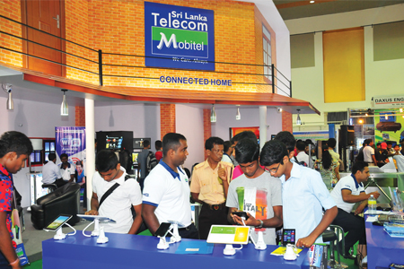
A large part of the Company’s success could be attributed to its understanding of the local market and an ability to swiftly respond to the new and growing market needs. Whilst expanding its 2G and 3G network coverage with the basic subscribers in mind, Mobitel is also fast-tracking its 4G technology and value added products and services deployment that offer new experiences to the sophisticated, trendy and tech savvy subscribers. The Company is ably assisting the corporate sector to improve efficiencies and productivity, cost savings, product development etc., towards becoming world-class, and above all Mobitel is partnering with the private and public sectors of the country as well as global partners to build an ICT infrastructure that has the capacity break through many frontiers and fuel Sri Lanka’s march forward to become a leading Asian Nation.
A noteworthy initiative undertaken during the course of the year was the development of an GPS-enabled ultrasonic sensor for monitoring vehicle fuel consumption and relay the data in real time to a mobile device. The Company expects considerable interest in this new technology from fleet and transport managers, bus and taxi companies, etc.
Mobitel continued to roll out 4G LTE technology in 2014, focusing on key cities and high-end customer locations. As 3G and 4G networks expand, they drive the uptake of internet-based services, particularly business services. Building on this, the Company tailored its service offerings to consumer demand with specialised app packages for social networking, email and video, and collaborated with service providers such as ikman.lk to provide even more benefits to customers.
With smart devices growing in popularity, it is clear that Wi-Fi will be a key driver of future data-service growth. In 2014, Mobitel embarked on a strategy of deploying carrier-grade Wi-Fi networks in high-demand locations such as hotels, restaurants, shopping malls and universities. Action to promote Wi-Fi solutions to the enterprise market were an integral part of this strategy.
An interesting special project in this area was the launch of free Wi-Fi services at the Sri Dalada Maligawa (Temple of the Tooth) in Kandy. These include access to an informative online guide for tourists visiting the temple. An interactive voice guide (with several languages to choose from) accompanies visitors as they explore each part of the temple. The Company hopes to replicate this application, duly modified, in other places of significance.
The biggest consumers of internet services are smartphone users, the majority of whom are pre-paid users. Aware that most lower-income users opt for pre-paid internet plans, the Company introduced several entry-level plans, some of which allow users to start experiencing the internet for as little as three Rupees. Mobitel also plans to leverage increasing smartphone penetration by partnering with several device distributors in Sri Lanka to offer internet products bundled with smart devices. An additional advantage is that these distributors also become part of Mobitel’s channel network. Social media packs are included in these data packages to promote broadband usage.
The many platforms developed and others under development are forming the bases on which all value adding services and solutions are built. Platforms such as Ticketing (365), Commerce, NFC and m2m are a few platforms that have been integrated to offer novel services and solutions. For instance, ticketing solutions such as railway ticketing, movie ticketing or air ticketing, which are built on the Ticketing platform is integrated with commerce platform based services such as mCash to increase subscriber share of wallet to Mobitel. Similarly NFC platform-based services such as travel card are integrated with the commerce-based platform service mCash. Such solutions derived by integrating platforms will be available as generic solutions or customised solutions based on specific need.
Complementing the growing trend in electronic transactions, mCash makes possible a host of services such as peer-to-peer cash transfers, bill payments, etc. via mobile phone. Following Central Bank approval, mCash was launched in late 2013 and proved popular from the outset. In 2014, the service was enhanced to enable customers to pay electricity bills, receive pension payments and pay insurance premiums via their mobile phones. In addition to personal mCash accounts, customers can use the service by visiting Mobitel branches or mCash Retailer outlets across the country.
In June, Mobitel and Dialog Axiata commenced a joint beta trial of the GSMA Mobile Connect service, which gives consumers convenient, secure access to a wide array of digital services using their smartphones or feature phones as authentication devices. This is the first time machine-to-machine technology of this kind has been made available to Sri Lankan users. The actual services on offer are provided online by firms such as Kapruka, MyDeal and WoW. This is a potentially enormous new field, and leading international SIM technology providers are collaborating with operators and the GSM Association to develop small authentication apps that can be downloaded by SMS. The Mobitel/Dialog trial has demonstrated the ‘interoperability’ of the technology and helps pave the way for its worldwide adoption. Etisalat and other major mobile network operators are expected to join the Mobile Connect global partnership in due course.
The Mobitel-hosted Google I/O Convention was held for the second year running in June 2014. It was attended by over three thousand registered participants, making it the largest ICT conference ever held in the country. The event featured in-depth sessions on building web, mobile and enterprise applications with Google and open web technologies such as Android, Chrome, OS, Google APIs, Google Web Toolkits and App Engine. Four presentations from the parent event in San Francisco were streamed to participants in Colombo and an intensely competitive ‘hackathon’ gave developers the opportunity to show off their talents.
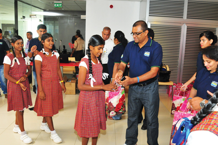
In support of intensified marketing efforts in Jaffna and the North, Mobitel was the ‘official mobile communications partner’ for Jaffna IT Week 2014, a youth-friendly initiative intended to boost investment in the region by the IT/BPM sector. The event showcased the wide range of opportunities available in ICT for young people, and the programme included mentoring and counselling sessions by leading IT professionals and industry thought leaders.
In Kandy, the Company participated in an e-waste clean-up campaign in partnership with the Central Environment Authority and other groups over the May-June period. A total of 312 metric tonnes of electronic waste was collected and safely recycled or disposed off.
Mobitel also teamed up with Ericsson and the Open University of Sri Lanka to deliver ICT training to teenage girls from farming communities in Sri Lanka through the Connect to Learn global education initiative, which founded by the Earth Institute, Ericsson and Millennium Promise, an education charity. In this collaborative effort, Ericsson supplies the ICT equipment, Mobitel provides the required connectivity and the Open University provides teachers, classrooms and content.
Finally, in a public service move, the Company launched a special hotline and call centre solution in collaboration with the National Cancer Control Programme of the Ministry of Health. The hotline provides callers with free information and advice on cancer prevention and control in Sinhala, Tamil or English.
The commendable market and financial performance of the Company, and its many achievements, awards and accolades are a direct result of the untiring efforts by the Company and its most valued team of people to build a company that is driven not only by profits, but also fuelled by a passion to empower a nation and its people. Mobitel salutes its valued customers who have placed their trust in the Company and in return pledges to reward that trust with a greater future filled with opportunity.
Reinvigorated by sustained growth and success and inspired by the unfolding opportunities in the Information and Communications space, Mobitel will further invest in broadband technology and in building network capabilities to meet future capacity requirements. New partnerships with partners both local and international will be forged towards realising the vision of making Sri Lanka a knowledge rich infocomm society.
As the Sri Lanka telecom industry matures and prepares for consolidation, in addition to investing in organic growth, the Company will take advantage of opportunities presented in the form of acquisitions towards delighting its customers with better value, service and lifestyle enhancing value-added products and services. Developing new services and building new platforms will be foremost in future plans to remain innovative, and Mobitel will assume an active role in delivering new disruptive technologies that would transform the way we live and work.
Investments in quality, service and research has been paramount to Mobitel, and will be of high relevance and importance as the Company embraces the digital future. In the current knowledge economy, investments in knowledge and know-how are as critical as investing in networks and the market for future survival and growth. Surviving the future and meeting the challenges of the future ICT challenges would mean that well-informed and visionary players would be investing in their people who are an integral part of the competitive advantage of their companies. Appreciative of the importance of knowledge, Mobitel will invest in its human resources to keep abreast with latest developments as well as building competencies required to perform in a challenging future. The Company will continue to subscribe to best industry and business practices and ensure that its people are motivated and aligned to the broader values and objectives of the Company.
Grounded in the principle of being different but relevant, Mobitel is on course to making Sri Lanka a knowledge rich infocomm society and consequently subscribing to the national vision of making Sri Lanka a Knowledge Hub in Asia. In that journey, Mobitel, the National Mobile Service Operator, will deliver the full potential of global ICT technologies to Sri Lanka, but duly adapted to meet local conditions and realities whilst maintaining its integrity and credibility in ‘Giving Life to Thought’ within the ICT ecosystem of Sri Lanka.
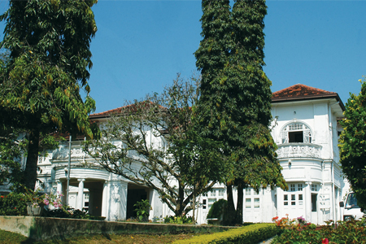
Within the first year of operation of the new subsidiary, formed to manage SLT owned properties, has now planned to start a few mega projects using the SLT properties which have been idling over the years.
Most of these projects are invested by local and foreign investors as joint venture projects and few of the projects will address the Group’s own infrastructure requirement which will in turn reduce the operational expenditure of the Group.
With the implementation of these projects, SLT will become a highly diversified business conglomerate in highly profitable sectors such as leisure and hospitality and condominium and other real estate development. As a result, the Group assets value will be enhanced by several billions of Rupees along with the Group brand image.
With the implementation of the business plan 2015, the subsidiary has embarked on a promising plan to bring revenue of Rs. 10 billion within next 3 years to the Group while contributing to Group’s bottom line substantially.
Further to SLT own properties, SLT PML is planning to be involved in the development of third party properties and the facility management sector.
Playing a crucial role in the ICT industry, Sri Lanka Telecom (Services) Limited has achieved 58% YoY revenue growth at the end of the year 2014. According to the Table 1.0, compared with the previous years achievements this is a remarkable growth of the Company. The secret behind its success was focusing on providing end-to-end networking and communications solutions to large Corporates and Government institutions.
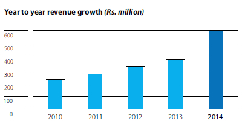
Some of our key accounts in year 2014 are Department of Census and Statistics, Hambantota Ruhunu Magampura International Port Project, Department of Inland Revenue, Hotel Canora, Eastern University, Lanka Sathosa and many more.
Further as shown in the graph below we have diversified our product portfolio into Enterprise network solutions, Enterprise communications, IT security solutions, Managed services, Business class mail service solutions (Biz Mail), Software solutions, Server solutions and branded computers, Trendnet network products and Surveillance systems.
Sri Lanka Telecom (Services) has won the No. 01 Kaspersky Corporate Partner Award at the Avian Corporate Partner Awards 2014 and NEC Premier Partner Award at the Award Ceremony held in Korea in 2014.
| Subscriber base growth YoY | 42% |
| Revenue growth YoY | 24% |
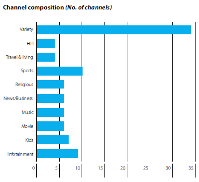
Two new packages launched to cater Tamil-Speaking community-Added apprx 170 new movies and music videos, added to On Demand Library Event TV, a broadcasting solution to telecast live and recorded events at an economical price.
Commissioned a state-of-art world class IP Television system with latest TV features. Going beyond from crystal clear image quality to delivery of full HD. Multi-layered, Content quality assurance capabilities with multiscreen capabilities i.e., mobile phone, personal tab, ipad, notebook etc.
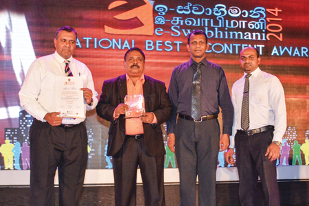
Being the sole directory publishers to the nation, SLT Rainbow Pages continued to dominate the directory industry of Sri Lanka during the year 2014 too amidst heavy competition from digital and social media. The Company saw an overall growth in the year 2014.
SLT Rainbow Pages Western Province Directory – the flagship product of SLT Publications (Private) Limited – was published in the year with the successful achievement of the set revenue target and distribution of the same was carried out successfully.
Transformation to digital era with the development of a range of digital directory products took place in the year. This is a strategic move in keeping with the digital revolution occurring in the world, directed at addressing evolving needs of people and organisations. In parallel to this, promotion of the digital directory product range (web, mobile app, e-directory and directory CD) was started during the year with a view to generating new revenue for the company while raising public awareness of these cutting-edge platforms through which the general public can access the directory with ease.
Yet another significant achievement during the year was setting-up of the advertising and activation arm as part of the diversification strategy. Initially it focused on carrying out activation activities of the SLT Group and later to focus on other clients particularly SME sector. Accordingly, during the year, all the activations of the SLT Group were successfully carried out by the newly established advertising and activation arm, bringing remarkable savings to the Group.
Also value additions to the existing directory products occurred in the year. As such, the Rainbow Pages web portal was improved and revamped with many new features in order to best cater to the evolving needs of the general public as well as the advertisers. The Rainbow Pages mobile apps was also improved significantly.
During the year 2014, the Company earned a remarkable net profit before tax of Rs. 214 million and net profit after tax of Rs. 154 million.
During the year, the Company initiated several new ventures under the five business pillars established along with the new vision ‘To deliver consistently innovative human capital solutions that enable our clients to thrive in the changing world of business’.
Some of our Past Awards include:
The five business pillars that were initiated during 2014 were:
We’ve provided HR outsourcing services to many prestigious clients outside the SLT group in various public and private sector industries. The services include:
We have also initiated our shared services arm under which we have the following segments:
Initiated with the aim of assisting clients with strategically integrating effective HR processes, programmes and practices for their daily operations, during the year the consultancy arm was able to provided consultancy services in areas such as industrial relations, HR operations, HR strategy and process development etc.
The education arm of SLT HCS was able to reach great heights and initiated its own subsidiary under the SLT Group now incorporated as the ‘SLT Campus (Private) Limited’.
SLT Campus (Private) Limited (SLTC) was formed in September 2014. SLTC is working towards achieving the status of a university in near future. SLTC focuses on producing trained employees for crucial and niche industries. More emphasis will be given to the technical requirements in producing a talent pool for different organisational verticals including engineers, technologists and technicians. The goal is to produce graduates who are readily employable from day one in the relevant sectors and are equipped with the necessary skills and right mind-set to perform optimally. SLTC also aims to offer study programmes at affordable prices. Strong industry-oriented focus along with practical expertise offered by SLT will certainly help SLTC to differentiate itself from other institutions that offer technical courses and degrees of similar nature in the country.
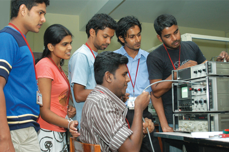
During the year, HCS was also able to sign a tri-partite memorandum of understanding together with the University Grants Commission and university of Colombo to offer modern degree programmes in the field of technology and engineering.
Initiated with the purpose of promoting a collection of exercises designed to examine the key competencies of the candidate.
During the year, we were able to Partner with - Thomas Assessments (Private) Limited, the Indian arm of a leading UK assessment and people profiling company which has been for over 30 years in the industry and conducted half million assessments annually in 60+ countries across 32,000+ clients.
Post our launch in August 2014 we have also held our own Thomas PPA Certification Programme for the first time in Sri Lanka.
Under this arm during the year for the first time we were able to market our in-house built HRIS system ‘eMpower’ which is a state-of-the-art web-based system designed to automate main HR-related functions of an organisation from recruitment to retirement.
We were also able to provide IT-based assessment services to leading companies.
Playing a pivotal role in driving SLT’s strategic investments for 4G LTE and Carrier Grade Wi-Fi deployments across the country, Sky Network (Private) Limited continued to successfully manage several concurrent undertakings designed to increase bandwidth levels and upgrade broadband capabilities in Sri Lanka.
Responding proactively to SLT’s plan to retain at least 75% of the fixed broadband market share in the country by end 2017 through the roll-out of complementary fixed broadband platforms, SLT’s 4G LTE service was launched during the year 2014 by upgrading the 4G WiMAX network of Sky Networks (Private) Limited while a large scale 4G LTE deployment spanning over three years was moved off the ground by awarding the tender for the implementation. Under this large scale deployment more than 1,500 TD LTE base stations would be commissioned across the country up to end 2017.
SLT’s Carrier Grade Wi-Fi service was launched across 150 hotspots in the island during the year 2014. The project aims to enhance the overall attractiveness of the broadband product offering and capture a wider share of the market. Moreover, by facilitating seamless mobile offloading and roaming for SLT ADSL customers, these Wi-Fi hotspots are expected to provide mobility for the SLT Group’s fixed and mobile broadband subscribers, thereby helping to increase the customer acquisition and retention rate, in direct correlation to the growth in the number of hot-spots across the country. The Carrier Grade Wi-Fi roll-out would continue over the next few years, supplementing the projected fixed broadband growth planned up to 2017.
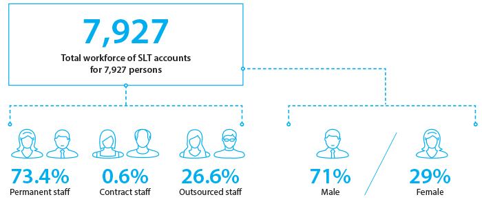
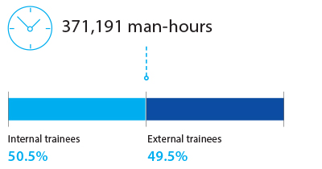
We invest in our people through training and development, recognise and reward merit through transparent and equitable processes, and above all, foster a climate of self-confidence and teamwork that fuels a will to win.
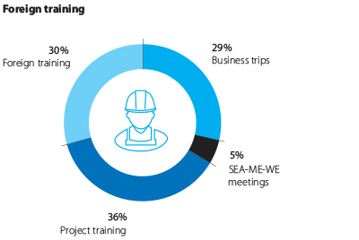
Staff who have undergone training abroad share the knowledge they have gained with other employees through presentations and reports, which are archived in the Company library for future reference.
| Year | SLT permanent | SLT contract | Outsourced employees | Total |
| 2010 | 6,202 | 89 | 1,661 | 7,952 |
| 2011 | 6,097 | 53 | 1,696 | 7,846 |
| 2012 | 5,991 | 55 | 1,857 | 7,903 |
| 2013 | 5,860 | 58 | 1,956 | 7,874 |
| 2014 | 5,777 | 45 | 2,105 | 7,927 |
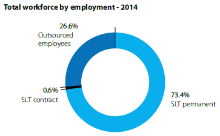
| Category | Female | Male | Total |
| Senior management | 13 | 64 | 77 |
| Middle management | 77 | 225 | 302 |
| Executive | 207 | 425 | 632 |
| Non-executive | 1,390 | 3,421 | 4,811 |
| Total | 1,687 | 4,135 | 5,822* |
* Excluding outsourced employees
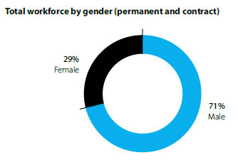


| Year | Executive | Non- executive |
Total recruits |
Total employees |
% from existing staff |
| 2010 | 4 | 0 | 4 | 6,291 | 0.06 |
| 2011 | 5 | 1 | 6 | 6,150 | 0.10 |
| 2012 | 2 | 33 | 35 | 6,046 | 0.58 |
| 2013 | 2 | 5 | 7 | 5,918 | 0.12 |
| 2014 | 48 | 48 | 96 | 5,822 | 1.65 |
| Total | 61 | 87 | 148 | ||
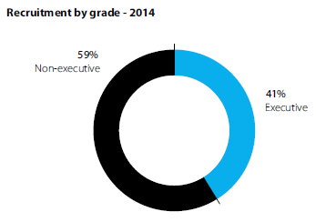
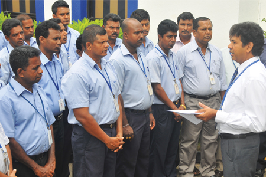
Responsibility for employee skills development at SLT lies with the Training and Development Division, which maintains four fully-equipped training schools where internal courses are conducted for employees in all areas related to company business. Each school has its own trainers with specialist knowledge in relevant areas, as well as other dedicated staff. More than 7,000 staff underwent training in the Company’s schools during the year under review.
The training schedule is published quarterly on the Company intranet. Employees may select courses appropriate to their requirements. All courses include practical sessions, mainly related to technical areas, and IT courses for which employees may be nominated by their superior officers. SLT staff also follow external training courses and seminars, both in Sri Lanka and abroad. Their course and convention fees and other expenses are underwritten by the Company.
Training requirements for each employee are assessed from completed performance-appraisal forms, which also allow staff to request training in specific areas. Based on this, the division prepares an annual training plan. Our policy is never to turn down a sincere request for training.
In addition to internal staff training, the SLT Training Division also extends training and certification services to university students following relevant courses. SLT is accredited by the UK City & Guilds Institution and by the universities of Sri Lanka to provide such services.
| Programme | Achievement (No. of Staff) |
| Datacom, optical fibre, NGN, OSP & access technology-related training | 923 |
| Customer centricity, customer care, IT system-related training, etc. | 4,662 |
| ADSL, IPTV & backbone-related training | 577 |
| Training in competencies to modernise operational architecture | 3,225 |
SLT will meet the fees and other costs of employees who wish to gain professional qualifications provided they meet certain conditions. The Company has sponsored staff members to qualify with such bodies as CIM, CIMA, IPM, PIM, ICASL, SLIM, ACCA and ICTA.
Learning culture at SLT is promoted by well-equipped company libraries, which all employees may make use of. Collectively, libraries at SLT headquarters and training schools contain more than 30,000 books and periodicals. A weekly newsletter, distributed to all employees, advertises newly acquired materials. Employees are encouraged to suggest books to be considered for acquisition.
Employees who have contributed in exceptional ways towards the company’s performance and business success are recognised by the presentation of a Transformers Award. These awards are given in several categories, so that staff in all divisions and departments of the Company are eligible for them. In the year under review, a total of 110 SLT employees received such awards for their performance in 2013. The winners were honoured at a grand ceremony held at a prestigious Colombo last July, at which the Minister Telecommunications and Information Technology was the chief guest.
As a leading technology Company, SLT is heavily reliant on intellectual capital - to wit, the expert domain knowledge of employees who are specialists in one or other of the technical fields and academic disciplines relevant to our business.
The Company optimises its use of intellectual capital in many different ways. Among them are knowledge circles (KCs), teams comprising specialists brought together temporarily to address a particular problem; brainstorming; training sessions conducted by in-house specialists; and dissemination of important information on the company intranet.
Over the years, SLT has developed the concept of ‘knowledge circles’ in which relevant expertise is brought collectively to bear on the resolution of (usually technical) problems. When an issue is identified, a KC comprising several hand-picked members and headed by a Divisional General Manager is appointed to study the issue and propose recommendations to resolve it. Team members are drawn from all departments and seniority grades. When the problem has been dealt with, the KC is dissolved, but team members may also remain as part of a larger, cross-functional Knowledge Team headed by the Chief Corporate Officer, who is also Head of Knowledge Management (KM).
KC recommendations and proposals are forwarded to senior management for approval, although in emergencies action may go forward pending approval. Proposals are also recorded in the KM log for future reference. The implementation of KC recommendations is monitored and evaluated to determine their success, cost-effectiveness and other factors.
SLT carries out regular market research studies to elicit information on customer behaviour and attitudes, brand health and customer satisfaction. Findings from these studies are shared with senior management and relevant users by way of presentations and access to a web portal where study reports are stored.
Better knowledge-sharing was an important corporate goal in 2014. As befits a telecoms group, we see knowledge-sharing as ‘better connectivity between minds’. This metaphor illustrates the importance of ICT as a facilitator of knowledge-sharing. The gathering and exchange of ideas and information from the Web and elsewhere through social networking, micro-messaging and blogging is a vital part of SLT’s knowledge culture.
The Company holds regular interactive sessions at which knowledge pertinent to business functions and issues is shared. Ad hoc brainstorming sessions with multidisciplinary participation are consciously facilitated and encouraged. Storytelling sessions are held to share pertinent experiences. All these sessions are minuted and the records filed for future reference.
More formal knowledge-sharing sessions are conducted by the Training Division: typically, these deal with technology, managerial soft skills, employee well-being and workplace safety. Engineers and other experts voluntarily conduct sessions for staff on new technologies and their implementation. Other subjects are covered by HR personnel and other relevant experts, typically at interactive workshops held during working hours to encourage participation. The success of this approach is evident from the number of voluntary participants at these workshops, which often have to be repeated to meet demand.
Staff who have undergone training abroad are obliged to share the knowledge they have gained with other employees through presentations and reports, which are archived in the Company library for future reference.
All SLT employees are encouraged to apply their knowledge to the preparation of the annual Business Plan. All suggestions are analysed and considered. ‘Lessons learned’ logs are also closely studied by the planners and decision-makers who set strategic direction for the year. Such logs are maintained by all divisions of SLT; their subject-matter covers all business and operational areas.
An organisation-wide intranet facilitates communication and supports the sharing of corporate decisions and other memoranda, ideas, business information, emails, etc. among employees at all divisions of SLT. Its contents include:
Emails are categorised as ‘info’, ‘circular’ or ‘social’ for easier reference.
Knowledge-sharing is also promoted by the publication and circulation of internal periodicals and newsletters featuring technological content, new industry developments and Group and Company news. Quarterly industry-information bulletins are compiled and circulated among senior managers. These publications are circulated and stored in electronic form, though hard-copy versions are often available. Managers are encouraged to submit comments and concurrences on the information provided.
Industry trends and competitor activity are monitored and captured via media reports and advertisements. These, too, are circulated among all employees in the form of daily email bulletins.
SLT’s monthly in-house journal, Amathuma, is circulated to all employees. It carries business and company news in a trilingual format.
Knowledge shared between SLT and important stakeholders is a key element in our growth and success.
Knowledge shared with customers is primarily technology-, product- and service-oriented. Conversely, SLT seeks to learn from customer experience. Customer day-visits are carried out by senior SLT managers to obtain feedback of customers, and customer forums are conducted as part of our marketing-communications effort. In addition, there are a number of other channels by means of which we share knowledge with our customers in a two-way process.
For enterprise customers, these channels include:
Knowledge is shared with SME customers through:
Residential customers are not neglected. SLT shares knowledge with them through:
Improved operational efficiency is the prime object of knowledge-sharing with suppliers. They, too, are visited by senior SLT managers. Pertinent issues are discussed and knowledge shared at these meetings. Other supplier knowledge-sharing channels include:
The media and general public are reached through:
SLT also shares pertinent information with its advertising and communications agents through annual marketing presentations, briefs for advertising and promotional activities, etc.
Commencing in April 2013, we launched a ‘Culture Change’ programme to foster the generation and propagation of innovative, workable ideas to improve our technological and service offerings and to build business. Suggestion boxes were placed in SLT offices, facilities and other buildings and employees were requested to submit their ideas A dedicated web portal, ‘Quick Wins’ was also set up for this purpose, with a specially-designed submission form and process. A dedicated team analyses each idea, and those considered viable are forwarded to the relevant Chief Officer for possible implementation. Meanwhile, the idea itself is recorded for future reference and use.
Staff members whose ideas are selected for implementation receive Company recognition and financial rewards. The selected ‘quick win’ is circulated by email in all three languages. In the year under review, 33 ‘quick wins’ were recognised.
A grievance is a complaint regarding a violation or a misinterpretation of the rules or procedures of the Company, or any unfair treatment. The objects of the SLT grievance-handing procedure are as follows:
Any staff member with a grievance may take up the matter personally or through his or her trade union representative. The matter should be reported orally or in writing to the employees’ Head of Division within a stipulated period. If a satisfactory resolution is not obtained or if there is any delay in obtaining relief, the employee may then appeal in writing to the relevant Chief Officer, who will take steps to resolve the grievance or refer the matter to the Human Resources Group. Any employee not satisfied with the relief granted by the Chief Officer may also appeal further in writing to the Human Resources Group. In the latter case, the Chief Officer (HR & Legal) or his representative may take steps to resolve the grievance or may refer it to a Committee comprising himself, the Head of Division (Employee Relations) or Manager (Employee Relations) and another senior member of the management team. Beyond this, further appeal may be made to the Chief Executive Officer, whose determination is final and binding.
Employees may also report and seek action on performance-related issues, such as inappropriate or unrealistic goals or targets, unfair evaluation by the supervisor or lack of transparency in evaluation, or violation of the Company’s performance-management guidelines.
The Grievance Handling Committee consists of the following officers:
SLT is determined to provide a safe and healthy working environment for every employee, even as we seek to increase productivity by preventing or controlling industrial accidents, occupational diseases, etc.
The Company encourages employees who have concerns about suspected misconduct or a breach of laws and regulations that may adversely affect the Company to come forward and express their concerns without fear of punishment or unfair treatment. It is also company policy to address any complaint of attempted or actual interference, reprisal, retaliation, threat, coercion or intimidation against employees who report, disclose or investigate improper or illegal activities and to protect those who come forward. Reports to management may be made anonymously if desired.
The existence of a distinct whistle-blower policy does not affect or alter Company policies and procedures for handling employee grievances or complaints relating to job performance, terms and conditions of employment, disciplinary matters and sexual harassment, all of which fall under the purview of the Human Resources Department.
A seven-member Whistle-blowing committee addresses every complaint. Its members include the relevant Chief Officer, who, however, has no voting power. Meetings are called when and where necessary depending on the cases referred to the committee. The Committee Secretary submits its reports at every Audit committee meeting. The report covers, in summary, all allegations received by the Company, progress on the cases referred to therein, investigation results, root causes, action taken, etc.
Our approach to Corporate Social Responsibility is to use our proficiency, technology and partnerships in creating positive impacts to society, whilst also growing our business.
Book Distribution Programme – Since 2003 to date, over 1.3 million books have been distributed; over 120,000 books every year.
SLT Child Protection Campaign – Programmes at 104 schools covering 33,159 children across the country.
Committed to the transformation of Sri Lanka into an information society, empowered by the interconnected world, Sri Lanka Telecom works in many ways to help citizens acquire and share knowledge from many sources, including one another and to apply that knowledge usefully in their lives and enterprises.
At grassroots level, SLT provides the ICT network and infrastructure connecting Nenasala knowledge centres around the country. Nenasala, which means Hall of Wisdom, is a Government telecentre project developed under the e-Sri Lanka Initiative and implemented by ICTA. These centres enable rural Sri Lankans to use internet-based knowledge and services to rise out of poverty, develop culture and commerce and sustain peace.
SLT also facilitates interconnectivity among the country’s universities and research organisations for the benefit of academics, students and others. Research papers and other publications are made available online and SLT provides Sri Lankan university students with customised, affordable broadband products and enhanced e-learning facilities. Interconnectivity among centres of higher learning and research also facilitates the formation of academic and professional networks.
Public security too, is promoted by knowledge-sharing. This is another area in which SLT is closely involved. In the year under review, we entered into a contract with the Police Department to link all police stations in the country in a single voice and data network.
Going beyond these contributions, which form part and parcel of our business operations, SLT has made a commitment to help Sri Lankans and others gain understanding of our country’s unique natural and cultural heritage with a view to sharing these riches and help preserve them for the future. This we do through the publication of corporate communication materials and other items that present nature, culture and arts of Sri Lanka for the edification of various stakeholder groups, including corporate clients, opinion leaders, tourists and media. The areas selected are always with immense national importance where preservation is required.
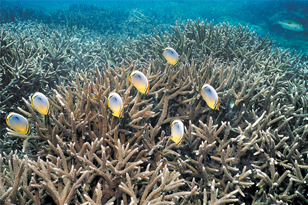
One popular vehicle for this initiative is the annual SLT calendar, which is distributed across the country. Themes are selected for their currency and appropriateness; after one is decided upon, content and images are commissioned from appropriate subject experts and creative contributors. The far-reaching appeal of the SLT calendar has made it popular with academics, artists, nature lovers, students and the general public. The theme for our 2014 calendar was ‘Medicinal Plants of Sri Lanka’.
As a corporate-citizenship initiative, SLT runs a book-distribution programme for needy communities around the country in collaboration with the Asia Foundation. The programme has been in operation since 2003, with over 120,000 books distributed every year. In total, some 1.3 million books have been distributed to date.
In addition to training SLT employees, the Group Training Centre also conducts external tertiary-level courses for young people looking to pursue careers in telecommunications. Following these courses, students may qualify for a City and Guilds Diploma in Telecommunications or an Edexcel/BTEC Higher National Diploma. In 2014, a total of 1,196 students attended these courses completing 180,651 training hours and one of our students, Samith Rajapaksha, became the first student from Asia to win the City & Guilds ‘International Learner of the Year’ award (see ‘Awards & Accolades’).
SLT currently operates four fully equipped training centres, respectively located at Welisara, Moratuwa, Peradeniya and Galle. In addition to fully-equipped training facilities and modern laboratories, each centre also provides residential and recreational facilities to students. Small class sizes with comprehensive course materials provided, together with course fees that deliver value for money, make our courses appealing to students of all ages. Lectures are conducted by a panel of highly experienced and talented SLT engineers.
SLT is also committed to help protect the children of Sri Lanka from various forms of abuse through a series of interlinked activities and programmes. At the core of this effort is sisu-connect, a virtual telephone platform that enables children and their parents to stay in touch easily and affordably when the child is away at school or attending a tuition class. Sisu-connect is a joint project of the Ministry of Education, the Ministry of Telecommunications & Information Technology and Sri Lanka Telecom.
Sri Lanka Telecom works in many ways to help citizens acquire and share knowledge from many sources, including one another and to apply that knowledge usefully in their lives and enterprises.
In collaboration with National Child Protection Authority SLT sponsors the lectures and workshops on child protection for children and school teachers. These activities are conducted by employees from SLT offices all over the island who volunteer for this work. By the end of the year, nearly 33,159 students in 104 schools across the island had been educated about the dangers of child abuse, how to avoid immoral influences and how to identify and report abuse cases.
Supporting the establishment of the national trauma service in Batticaloa as the Super Platinum Sponsor for the Batticaloa Teaching Hospital project initiated by The Foundation Supporting A National Trauma Service in Sri Lanka (Project BEAP).
Donation of books to libraries in Cancer Hospital Maharagama - In keeping with the true spirit of the Wesak season, books were donated to set up 21 libraries at the Cancer Hospital wards. Employees volunteered books for donation and 1,500 books were donated to the hospital. Books donated covered varying subjects including spiritual books, story books and novels, children’s books as well as educational books to suit the reading preferences of children, youth, adults and senior citizens who receive treatment at the hospital.
In collaboration with the Regional Chamber of Commerce, Anuradhapura, SLT conducted an awareness workshop at Anuradhapura recently in an effort to enhance ICT literacy levels. The workshop was conducted for the children of the Company’s small and medium-sized enterprise customers in the area. The workshop was a success, with an attendance of nearly hundred children of SME. The programme included presentations on ICT for business, connectivity solutions and cloud computing and included live demonstrations of products for the SME sector such as internet services, new-technology devices, cloud computing solutions and surveillance camera systems.
A total of a little over Rs. 1 million contribution of SLT staff vouchers was spent on the programme in the year under review. Our regional offices in Galle and Gampaha were the most active; each conducted a total nine school programmes the former reaching 5,000 students and the latter, 1,853. Our Chilaw, Kandy and Batticaloa Regional Offices each conducted six or more programmes.

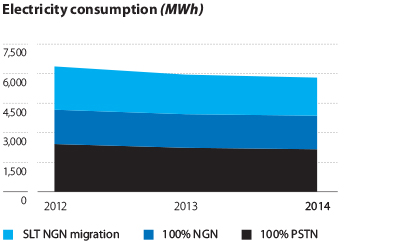
SLT has always promoted the use of energy efficient technologies and the application of best practices for energy management at all levels of the business.
SLT strives to be a good environmental citizen, taking measures to reduce pollution and waste generated by its operations to the fullest possible extent. The following tables give the Company’s resource consumption and emissions figures for the year under review and the two years preceding:
| 2012 | 2013 | 2014 | |
| 100% PSTN | 2,437.50 | 2,219.50 | 2,146.50 |
| 100% NGN | 1,725.50 | 1,725.50 | 1,725.50 |
| SLT NGN Migration | 2,219.50 | 2,001.50 | 1,934.70 |
| 2012 | 2013 | 2014 | |
| 100% PSTN | 55.18 | 50.18 | 47.20 |
| 100% NGN | 38.88 | 38.88 | 38.88 |
| SLT NGN Migration | 50.18 | 45.18 | 42.60 |
| 2012 | 2013 | 2014 | |
| 100% PSTN | 1,460.87 | 1,334.27 | 1,272.10 |
| 100% NGN | 1,047.87 | 1,047.87 | 1,047.87 |
| SLT NGN Migration | 1,334.27 | 1,207.67 | 1,148.10 |
| 2012 | 2013 | 2014 | |
| 100% PSTN | 669.23 | 612.23 | 587.85 |
| 100% NGN | 484.23 | 484.23 | 484.23 |
| SLT NGN Migration | 612.23 | 555.23 | 530.60 |
The year under review was one in which SLT received a large number of awards and accolades from various industry and professional bodies. These awards celebrated our achievements in a variety of different fields, from all-round business excellence to energy efficiency to annual reporting.
The Company received indirect recognition of the quality for its technical education when Mr. Samith Rajapaksha, a student pursuing a Technician Diploma in Telecommunication Systems from the City & Guilds Institute at the SLT Training Centre, became the first Asian ever to win the Institute’s International Learner of the Year Award.
Mr. Rajapaksha also received the Institute’s Medal for Excellence in the Telecommunication Systems category. Both awards were conferred on him at a ceremony held at the Roundhouse Theatre in London, England.
The C&G Medal for Excellence recognises the achievements of learners, lecturers and trainers who have achieved results by producing exceptional work - going above and beyond what is expected to achieve their goals. Mr. Rajapaksha survived a highly competitive evaluation process among more than 2.5 million candidates from 80 countries around the world to win his medal, for which he was nominated by Mr. T.S. Bandaranayake, one of his lecturers at the SLT Training Centre.
SLT Training Centre students also won C&G Medals for Excellence in 2011 and 2013.